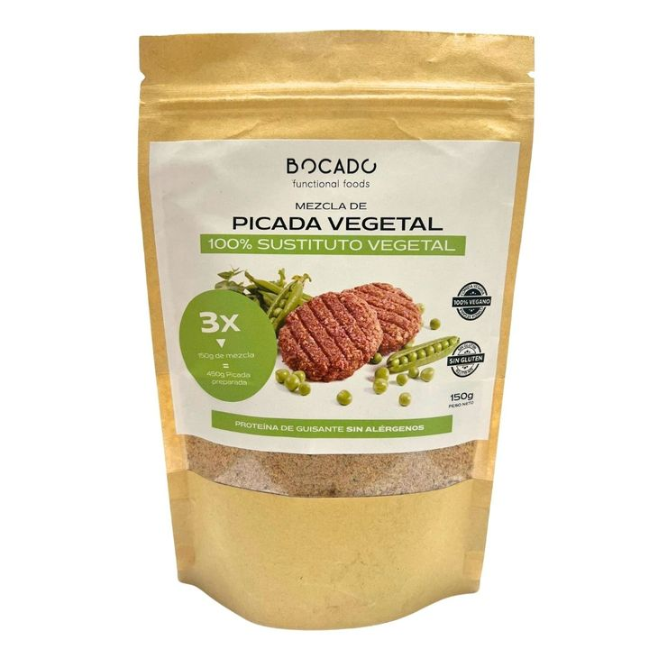

Recette · Plat principal · 15 min environ
Burgers végétaux farcis au fromage
Préparez « Burgers végétaux farcis au fromage » avec Préparation pour haché végétal : une recette facile, prête en 15 minutes environ. Elle contient : asperges, carotte et fromage, et elle est parfaite pour un déjeuner ou un dîner. Préparation pour haché végétal apporte 11,4 g de protéines pour 100 g de produit fini.
4 ingrédients5 étapes15 min environAvec vidéo

Préparée avecPréparation pour haché végétal 150 g150 g · donne 450 gVoir le produitIngrédients
- Haché végétal Bocado
- Asperges
- Carotte
- Fromage
Déclaration nutritionnelleRiche en protéines, pauvre en matières grasses, source de fibres, sans cholestérol, sans gluten, convient aux végans
Préparation
- 01Faire sauter les asperges et la carotte
- 02Hydrater le haché végétal
- 03Le mélanger avec les légumes sautés
- 04Former des burgers en les farcissant de fromage
- 05Cuire à la poêle
En lisant la vidéo, YouTube peut déposer des cookies. En savoir plus.